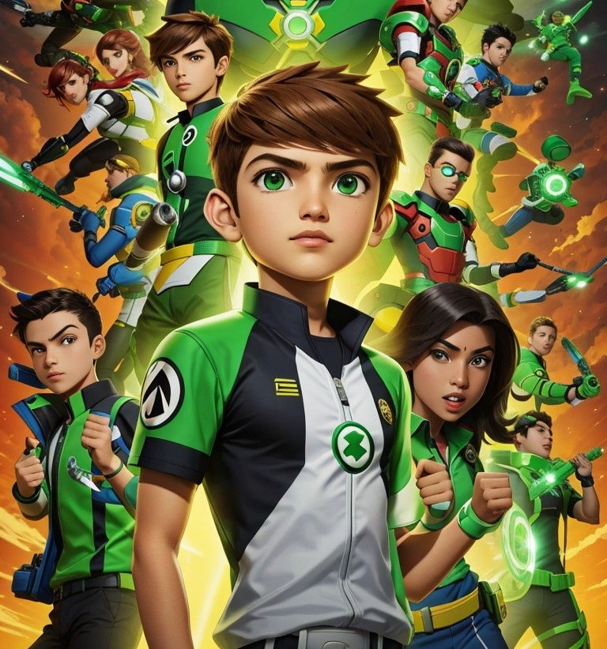

BEN10 
Um garoto de 10 anos de idade descobre um dispositivo mágico que pode transformá-lo em 10 heróis alienígenas diferentes, cada um com habilidades únicas.

KAAHNYA o(≧∇≦o)
BEN10 - OMNIVERSE
O série segue as aventuras de Ben Tennyson com dezesseis anos de idade, portador do Omnitrix, que permite que Ben se transforme em vários alienígenas.
KAAHNYA o(≧∇≦o)
BEN10 - CARTOON
Benjamin Kirby Tennyson, um garoto de 10 anos, que está sempre tentando ter aventuras alienígenas antes de suas férias terminarem.
KAAHNYA o(≧∇≦o)